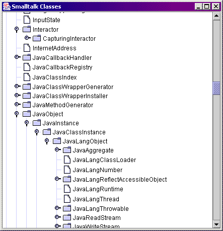

|
JNIPort for Dolphin Smalltalk |
|
|
Back to Goodies |
An Example of Using CallbacksThis section is an example of using callbacks from Java into Smalltalk. The first half uses callbacks to create a Swing window showing the Smalltalk class hierarchy. The second half adds an event listener to the tree that allows Smalltalk code to observe the tree's “selection change” events
JNIPort should be configured to use ghost classes and support callbacks.
To configure ghost classes, ensure that the list of 'watcherClasses', under
'jniPortSettings', includes Since AWT/Swing uses Java threads, you should make sure that the JNI Helper is installed, or that you are not hooking the Java runtime's debugging output. If you followed the instructions in the installation walkthrough then JNI Helper will be configured. Once a suitably configured JVM is running, you can test whether callbacks are properly configured by displaying the Status Monitor's console page. If it does not show a warning message, then callbacks are probably configured. You can test that they are working by sending some text to the Java console: We are getting ahead of ourselves; before we can experiment with callbacks we'll have to write some Java code that uses them. Using Callback RequestsJava Code
In this example, we create a Java
Java
These will be used by Swing to populate the tree; we will implement them by sending callback requests to Dolphin.
The source for the Java class is Callbacks always have a “tag” object to identify the request. This should be unique and should last for as long as callbacks are in use. A handy way to set this up is to use Java strings for the tags, held as static variables in the class: That creates three tag objects that will be used to identify the three callback requests. It creates new strings for the tags, rather than just using string literals, in order to guarantee that the tags are unique. We also define some static “getter” methods for the tags, since our Smalltalk code will need to know what they are before it can link them to the proper callback handlers. We could just as well have made the tags themselves public (since they are static and final, they are really just constants), or even configured JNIPort to read the private variables directly. Yet another option would be to make the “getters” be instance methods (but still returning the value of the static tags), it all depends on how you are using the callbacks. Now to define the methods that call back into Smalltalk. Starting with:
This is called by Swing to see how many children a given node has.
The meat of the methods is inside the try/catch block. First it creates a
It then calls the request's
The try/catch block is needed because
The next of our callback methods is:
This is called by Swing to get the Nth child of a given parent. It is
allowed to return
This also creates a The last of our callback methods is: This is called by Swing to find the index of a child within the list of its siblings. The implementation does not differ interestingly from the other two callback methods.
The rest of the Java class is just a boilerplate implementation of a
You should compile the class and ensure it is somewhere on the JNIPort classpath. The .JAR file, 'JNIPort-Tests.jar', which is supplied with JNIPort in the 'Extras\' folder already includes a compiled version of the code, so if that JAR file is on the classpath then you should be OK already. Smalltalk CodeIt would be possible to use our new Java class entirely by typing into a Smalltalk workspace, but it wouldn't make for a very clear example. Instead we'll generate a proper wrapper class.
In this case, the Java tree will be showing the state of the entire
Smalltalk image, rather than the state of some specific Smalltalk
object. That's a slightly unnatural case, but it does keep the
example simple. We can define all the code we need to handle
callbacks as methods attached to the class static for
We start by using the Wrapper Wizard to generate a class-side wrapper class for our example. First ensure that JNIPort has loaded our class, we can do that by choosing the 'Find/Load Java class' command from the class menu of the Status Monitor's classes page. Enter the full name of the class, 'org.metagnostic.jniport.eg.TreeModelExample' in the dialog box (this is case-sensitive). If you have compiled the class, and it is somewhere where JNIPort and the Java runtime can find it, then the classes page will load the class (if it wasn't before) and select it in the class tree.
Now to generate a static wrapper class. If you select
'Generate class-side wrappers...' from the 'Class' menu, then the Wrapper
Wizard will start. If you have the 'CU Java Examples' package installed
then the Wizard will have selected the pre-defined wrapper class for
Once you have created the target class the Wizard should let you go on to populate it, just accept all the defaults. It will create the new methods and add them to the target class. Now we hit an awkwardness. We are using ghost classes, but ghost classes don't really support having new wrapper classes added to the system while it is already running (it wouldn't be a problem if we weren't using ghosts, we could just let the Wizard “register” the new class and all would be well). It is possible to tell JNIPort to use the new class, but I haven't yet created a public API for doing so, let alone a GUI. So, I'm afraid, the easiest thing to do is just close down JNIPort and restart. Of course, that means that — thanks to Sun — you'll also have to close and restart Dolphin before you can start the new JVM. Sorry!
After all this messing around, we have managed to create a static wrapper
class for
Now we want to tell our new wrapper object how to handle the callbacks
from Java. We'll add the following method to
That method is normally called by JNIPort as the wrapper class is first registered. It won't have been called yet, though, so you can either restart JNIPort again <evil grin>, or you can find the class static and send it the message manually with code like: whichever you do, you should find that the Status Monitor's status page now shows that the number of registered callbacks has gone up by three.
What the
Note the check that the callback registry isn't Each handler block just forwards the parameter to a corresponding handler method; we now have to write those. Start with the handler for 'getChildCount':
Recall that in this case the parameter to the callback was just the string
name of a class. The implementation is straightforward: convert the Java
string to a Smalltalk string, find the named Smalltalk class, find out
how many direct subclasses it has, and return a
This method doesn't bother with any error checking, which would not be a good idea for production code, but it keeps the example simple. If any errors did occur, then they would be trapped by JNIPort and rethrown as Java errors in the caller. (Which means, by the way, that you won't get walkbacks from errors in hander code. You can put breakpoints in handlers if you wish.) The next of our handler methods is the implementation of the 'getChild' request:
In this case, remember, the caller passed two arguments packed into a Java
array, so the first thing we do is unpack them. The first element is the
name of the parent class, the second is an Having unpacked the parameters, we get the list of subclasses of the named class (again treating '<<root>>' specially), find the indexed element of that list, and return its name converted to a Java string. The last of our handler methods is the implementation of the 'getIndexOfChild' request: Which is similar to the previous two handlers. All this Smalltalk code is provided as part of the 'CU Java Examples' package. Running ItNow we are in a position to try out our new code. We'll create the Swing window from a workspace. We start, as always, by getting a reference to the JVM object: First we make an instance of our tree model class: You could test it out from the workspace if you wanted. For instance: Now we make a Swing window to display the tree model. If this is the first time you have loaded any Swing class in this JNIPort session then there will be the usual irritating delay as JNIPort loads lots of Swing classes. We create a frame, add a scrolling pane within it, and a JTree within that. We tell the JTree to use our tree model as the source of its data. See the Java documentation for how it all fits together. And then… Ta da…  You will probably notice that it is pretty slow, especially if you open up the 'Object' branch, and then scroll around. One reason is that Swing is sending lots of callbacks as it scrolls (on the order of 100 per second on my machine), and callbacks are slow. The other is that JNIPort is creating lots of wrappers for references to Java objects; if you look at the history page of the status monitor, then you should see that scrolling the tree is causing JNIPort to create and discard perhaps a thousand wrapper objects per second. There is an important lesson to be learned from this. As the section on callbacks warns, callbacks are slow and are not suited to creating tight integration between Java and Smalltalk code. In this case, a better implementation would probably have used a cache in the Java tree object and only called back into Smalltalk when it needed to fill, or refresh, the cache. Another possibility would be to avoid callbacks altogether, and to create and populate the tree object entirely by calling down from Smalltalk into Java. Using EventsNow that we have our tree showing Smalltalk classes, we can use it to experiment with Java events. JNIPort includes a way to arrange that Java events can be forwarded into Smalltalk, see events in the Callbacks section for the background. We'll use it now to observe selection change events in the tree.
Firstly we are going to have the selection change events triggered off
the Smalltalk proxy for the Java tree pane. However that means that we
must ensure that we are using a
canonical reference
to the pane. That is easily arranged by sending
Now we find the Java event we are interested in. In Java events are
represented as methods in listener interfaces, so start by finding
the selection changed method; the one we want is
Next we create an event forwarder. That is a Java object that implements the
Creating the forwarder also sets up a handler for the callback that will trigger
Now all we have to do is to add our new listener object to the tree pane's list of observers:
And now, any selection changes will be reported in Smalltalk space as
Use your favourite event tracing tool to verify that it is working. |
Copyright © Chris Uppal, 2003-2005
Java, JNI (probably), JVM (possibly), and God knows what else, are trademarks of Sun Microsystems, Inc.